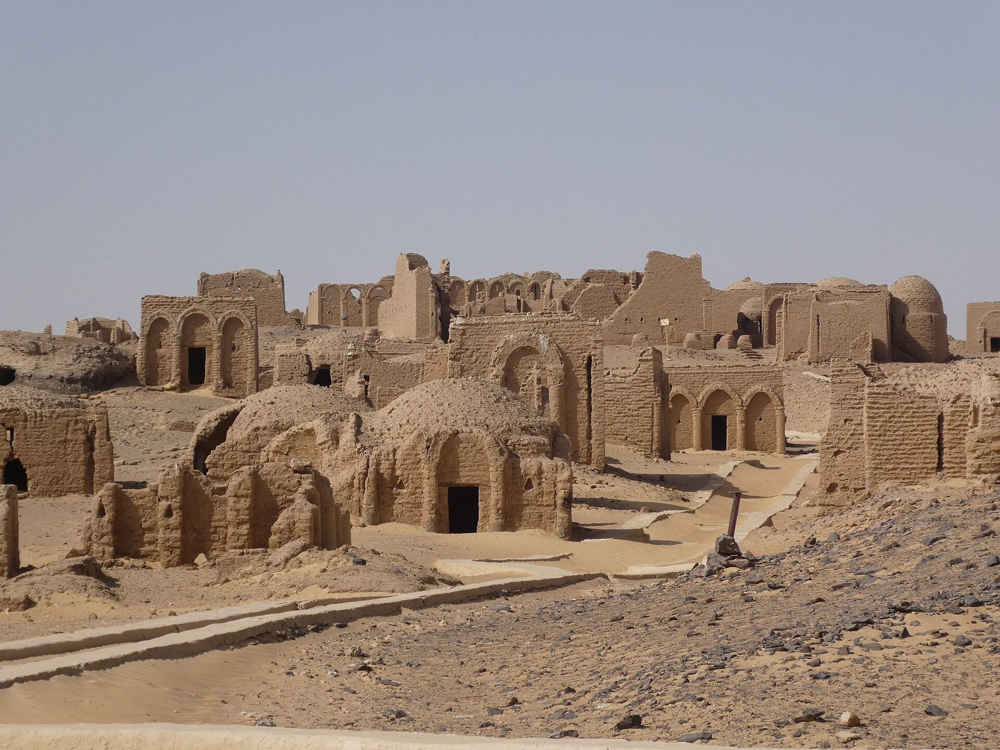
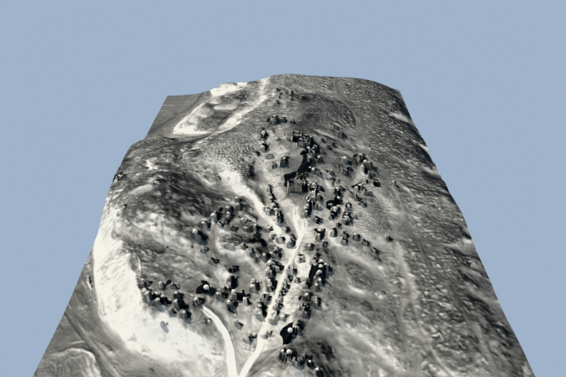
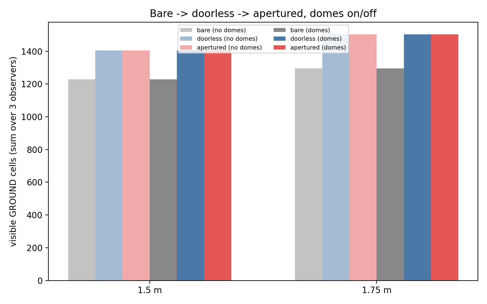

GSoC 2026 · Late Antiquity Modeling Project (LAMP), HumanAI Foundation · mentors Dr. Camille Leon Angelo (University of Alabama) and Dr. Joshua Silver (Karlsruhe Institute of Technology) · research facilitated by the REL Digital Lab, Department of Religious Studies, University of Alabama · 21 August 2026
A Viewshed That Sees Through Building Apertures
True 3D visibility analysis for a late-antique necropolis

Standard GIS viewsheds treat every building as a solid, opaque block. This project rectifies this limitation. The script I built casts rays through a real 3D scene with modelled doors and windows, creating new possibilities for exploring the relationship between the landscape and the structures that populated it.
The site and the question
El Bagawat is a necropolis comprising roughly 263 mudbrick chapels constructed on the sandy hills of Egypt’s Western Desert, built between the 3rd and 7th centuries CE. The Late Antiquity Modeling Project’s (LAMP) interest in the site is both architectural and social: what did a person standing anywhere in this landscape actually see, and how did that shape Christian use of particular buildings?
Answering that requires a viewshed — a simulation of what someone can see from a given point. Existing tools can compute one. The trouble is what they leave out.
The problem with standard tools
GIS viewshed analysis — GRASS r.viewshed, 2D
space-syntax visibility graphs — is planimetric. Every building
is a solid block with a height, nothing more. That’s a
reasonable simplification for a lot of terrain analysis, but it
obscures important nuances: namely, how doorways and windows let
sight and light pass through a structure and
between structures, not just around them.
A necropolis of individually built, inconsistently oriented mausolea, on sloped and irregular ground, is close to a worst case for that simplification. The direction of a mausoleum’s entrance matters. If a model can’t represent an aperture, then it can’t accurately represent the visual dimensions of a built environment.
What I built
A true 3D ray-casting engine. Buildings get real height from the difference between two digital elevation models — one with structures, one without — rather than from an assumed constant or a separate imagery source. Rays are cast from an observer’s eye (default 1.5 m, more accurately reflecting skeletal data for ancient populations rather than the usual 1.75 m GIS default) through the resulting 3D scene, checking first-hit geometry the same way a renderer would. This script can also be customized to account for variances in the visitor’s head position, such as whether they are looking up or straight ahead.
Before adding anything the site plan doesn’t already have,
the engine had to earn trust on the plain case: it agrees with GRASS
r.viewshed at 97–99% cell-by-cell agreement on
solid, unmodified buildings. Anything that changes afterwards is
coming from the openings, not from a bug in the ray caster.

Finding the real doors
The incomplete nature of archaeological data made this project all the more challenging. For example, locating building entrances was not an easy feat. The obvious source for door positions would normally be the site’s top plan. However, because both entrances and incompletely preserved walls are visualized with visible gaps in the linework, computational tools could not differentiate between these two features.
What worked instead was lower-tech: we used information provided in the excavation report, which noted the entrance direction. The entrance directions for 194 of 263 chapels were hand-validated against a sample. Door widths and positions for a handful of chapels came from CAD threshold marks in the surviving architectural drawings. Between the two, the registry now holds 469 openings across 202 buildings, including 197 doors and 93 windows.
Adding openings to a validated, solid baseline and re-running the site-wide comparison gives a clean decomposition:
| Variant | Ground Cells Visible | Interior-Visible Pairs |
|---|---|---|
| Solid buildings only | 36,520 | 8 |
| + Doors | 36,657 (+137) | 11 |
| + Windows | 37,858 (+1,201) | 11 (+0) |
| + Niches, apses | 37,858 (+0) | 11 (+0) |

In the case of this site’s architecture, doors add comparatively little ground area, but are the only opening that puts a building’s interior in view. Windows add roughly nine times more visible ground and precisely zero new interiors. That’s not a coincidence of this site — it’s forced by the geometry. A windowsill sits above standing eye height, so a sightline through it has to rise before it can pass, and it lands high on the far wall rather than reaching the floor. A door spans floor level, so a sightline through it can go straight in.
Is the arrangement intentional?
The decomposition above says what a single doorway does. A separate question is whether entrances across the whole site are arranged with respect to each other — whether standing at one chapel’s door puts another chapel’s interior in view more often than chance would produce on this terrain, with this density of buildings.
Here is what our initial analysis suggests: a pre-registered Monte Carlo test (α = 0.01, Holm-corrected, 999 draws) counts ordered building pairs where one structure’s interior is visible from a standing position outside another’s doorway. Against three nulls — permuting which wall carries the door, permuting chapel positions, and permuting both — the observed count of 377 such pairs is rejected by all three: zero of 999 random draws in any null reached it.
What does and doesn’t this establish? The nulls test whether the arrangement is random, not why it isn’t. Our initial results suggest that the entrance arrangement is non-random with respect to something local; 377 is the measurement, not yet the explanation of what produced it. The Late Antiquity Modeling Project (LAMP) has a hypothesis for what is driving this, and will explore that hunch more in the next phases of the project.
Limits of the data available
The documentation for the site does not consistently provide both an opening’s position along its wall and its dimensions. The excavation report sometimes states which wall has an entrance, but not a surveyed position. Everywhere else, position and dimensions fall back to a spacing rule and a class default. What’s genuinely evidenced is which wall an opening sits in — not exactly where along it.
There’s also no measured visibility data to validate against because we are working with archaeological reconstructions. Validation instead requires corroborating and comparing with established tools, and visual audit of outputs.
Why this matters beyond one site
Archaeology, urban history, and architecture all lean on visibility to explain human behavior. For too long, these fields have accepted “buildings are solid blocks” as a limitation of the available tools. A physically real, aperture-aware 3D approach removes that constraint.
The engine and pipeline are published so the method can be applied elsewhere with appropriate credit.